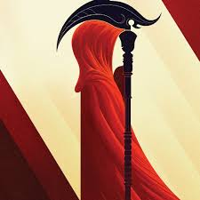

Ceifador
Neal Shusterman

Eu gosto de como a historia envolvente do livro te deixa em uma imersão profunda
- Gosto do tema que o livro dá em relação a imortalidade
- Gosto de como os Ceifadores(como são chamados) dão uma espécie de elemento surpresa e duvida no leitor
- Da escrita bem formada pela a autora te coloca naquele mundo onde não há mais riscos sobre a morte
Resenha do Livro
Comprar o livro